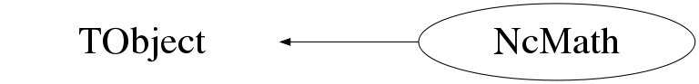

class NcMath: public TObject
Class NcMath Various mathematical tools which may be very convenient while performing scientific analysis. Example : Probability of a Chi-squared value NcMath M; Float_t chi2=20; // The chi-squared value Int_t ndf=12; // The number of degrees of freedom Float_t p=M.Prob(chi2,ndf); // The probability that at least a Chi-squared // value of chi2 will be observed, even for a // correct model --- Author: Nick van Eijndhoven 14-nov-1998 Utrecht University - Modified: NvE $Date: 2016-02-07 19:20:26 +0100 (Sun, 07 Feb 2016) $ NCFS
Function Members (Methods)
public:
| NcMath() | |
| NcMath(const NcMath& m) | |
| virtual | ~NcMath() |
| void | TObject::AbstractMethod(const char* method) const |
| virtual void | TObject::AppendPad(Option_t* option = "") |
| Double_t | BesselI(Int_t n, Double_t x) const |
| Double_t | BesselK(Int_t n, Double_t x) const |
| TF1 | BinomialCDF(Int_t n, Double_t p) const |
| TF1 | BinomialDist(Int_t n, Double_t p) const |
| Double_t | BinomialPvalue(Int_t k, Int_t n, Double_t p, Int_t sides = 0, Int_t sigma = 0, Int_t mode = 0) const |
| virtual void | TObject::Browse(TBrowser* b) |
| TF1 | Chi2CDF(Int_t ndf) const |
| TF1 | Chi2Dist(Int_t ndf) const |
| Double_t | Chi2Pvalue(Double_t chi2, Int_t ndf, Int_t sides = 0, Int_t sigma = 0, Int_t mode = 1) const |
| Double_t | Chi2Value(Int_t m, Int_t* n, Double_t* p = 0, Int_t* ndf = 0) const |
| Double_t | Chi2Value(Int_t m, Double_t* n, Double_t* p = 0, Int_t* ndf = 0) const |
| Double_t | Chi2Value(TH1* his, TH1* hyp = 0, TF1* pdf = 0, Int_t* ndf = 0) const |
| static TClass* | Class() |
| virtual const char* | TObject::ClassName() const |
| virtual void | TObject::Clear(Option_t* = "") |
| virtual TObject* | TObject::Clone(const char* newname = "") const |
| virtual Int_t | TObject::Compare(const TObject* obj) const |
| virtual void | TObject::Copy(TObject& object) const |
| virtual void | TObject::Delete(Option_t* option = "")MENU |
| virtual Int_t | TObject::DistancetoPrimitive(Int_t px, Int_t py) |
| virtual void | TObject::Draw(Option_t* option = "") |
| virtual void | TObject::DrawClass() constMENU |
| virtual TObject* | TObject::DrawClone(Option_t* option = "") constMENU |
| virtual void | TObject::Dump() constMENU |
| Double_t | Erf(Double_t x) const |
| Double_t | Erfc(Double_t x) const |
| virtual void | TObject::Error(const char* method, const char* msgfmt) const |
| virtual void | TObject::Execute(const char* method, const char* params, Int_t* error = 0) |
| virtual void | TObject::Execute(TMethod* method, TObjArray* params, Int_t* error = 0) |
| virtual void | TObject::ExecuteEvent(Int_t event, Int_t px, Int_t py) |
| virtual void | TObject::Fatal(const char* method, const char* msgfmt) const |
| virtual TObject* | TObject::FindObject(const char* name) const |
| virtual TObject* | TObject::FindObject(const TObject* obj) const |
| TF1 | FratioCDF(Int_t ndf1, Int_t ndf2) const |
| TF1 | FratioDist(Int_t ndf1, Int_t ndf2) const |
| Double_t | FratioPvalue(Double_t f, Int_t ndf1, Int_t ndf2, Int_t sides = 0, Int_t sigma = 0) const |
| Double_t | Gamma(Double_t z) const |
| Double_t | Gamma(Double_t a, Double_t x, Int_t mode = 0) const |
| TF1 | GammaDtDist(Double_t r, Double_t z) const |
| TF1 | GaussCDF(Double_t mu, Double_t sigma) const |
| TF1 | GaussDist(Double_t mu, Double_t sigma) const |
| Double_t | GaussProb(Double_t q, Double_t mean = 0, Double_t sigma = 1, Int_t isig = 0) const |
| Double_t | GaussPvalue(Double_t q, Double_t mean = 0, Double_t sigma = 1, Int_t sides = 2, Int_t isig = 0) const |
| virtual Option_t* | TObject::GetDrawOption() const |
| static Long_t | TObject::GetDtorOnly() |
| virtual const char* | TObject::GetIconName() const |
| virtual const char* | TObject::GetName() const |
| virtual char* | TObject::GetObjectInfo(Int_t px, Int_t py) const |
| static Bool_t | TObject::GetObjectStat() |
| virtual Option_t* | TObject::GetOption() const |
| virtual const char* | TObject::GetTitle() const |
| virtual UInt_t | TObject::GetUniqueID() const |
| virtual Bool_t | TObject::HandleTimer(TTimer* timer) |
| virtual ULong_t | TObject::Hash() const |
| virtual void | TObject::Info(const char* method, const char* msgfmt) const |
| virtual Bool_t | TObject::InheritsFrom(const char* classname) const |
| virtual Bool_t | TObject::InheritsFrom(const TClass* cl) const |
| virtual void | TObject::Inspect() constMENU |
| void | TObject::InvertBit(UInt_t f) |
| virtual TClass* | IsA() const |
| virtual Bool_t | TObject::IsEqual(const TObject* obj) const |
| virtual Bool_t | TObject::IsFolder() const |
| Bool_t | TObject::IsOnHeap() const |
| virtual Bool_t | TObject::IsSortable() const |
| Bool_t | TObject::IsZombie() const |
| Double_t | LiMaSignificance(Int_t Non, Double_t Ton, Int_t Noff, Double_t Toff, Double_t Ra = 1, Double_t Re = 1) const |
| Double_t | LnGamma(Double_t z) const |
| Double_t | LnGamma(Double_t a, Double_t x, Int_t mode = 0) const |
| Double_t | LnNfac(Int_t n, Int_t mode = 2) const |
| Double_t | LnRfac(Double_t r) const |
| Double_t | LogNfac(Int_t n, Int_t mode = 2) const |
| Double_t | LogRfac(Double_t r) const |
| virtual void | TObject::ls(Option_t* option = "") const |
| void | TObject::MayNotUse(const char* method) const |
| Double_t | MeanMu(Double_t cl, Double_t nbkg, Int_t mode, TF1* w = 0, TFeldmanCousins* f = 0, Int_t nmax = 0) const |
| TF1 | NegBinomialnCDF(Int_t k, Double_t p) const |
| TF1 | NegBinomialnDist(Int_t k, Double_t p) const |
| Double_t | NegBinomialnPvalue(Int_t n, Int_t k, Double_t p, Int_t sides = 0, Int_t sigma = 0, Int_t mode = 0) const |
| TF1 | NegBinomialxCDF(Int_t k, Double_t p) const |
| TF1 | NegBinomialxDist(Int_t k, Double_t p) const |
| Double_t | NegBinomialxPvalue(Int_t x, Int_t k, Double_t p, Int_t sides = 0, Int_t sigma = 0, Int_t mode = 0) const |
| Double_t | Nfac(Int_t n, Int_t mode = 0) const |
| virtual Bool_t | TObject::Notify() |
| void | TObject::Obsolete(const char* method, const char* asOfVers, const char* removedFromVers) const |
| static void | TObject::operator delete(void* ptr) |
| static void | TObject::operator delete(void* ptr, void* vp) |
| static void | TObject::operator delete[](void* ptr) |
| static void | TObject::operator delete[](void* ptr, void* vp) |
| void* | TObject::operator new(size_t sz) |
| void* | TObject::operator new(size_t sz, void* vp) |
| void* | TObject::operator new[](size_t sz) |
| void* | TObject::operator new[](size_t sz, void* vp) |
| NcMath& | operator=(const NcMath&) |
| virtual void | TObject::Paint(Option_t* option = "") |
| TF1 | PoissonCDF(Double_t mu) const |
| TF1 | PoissonCDF(Double_t r, Double_t dt) const |
| TF1 | PoissonDist(Double_t mu) const |
| TF1 | PoissonDist(Double_t r, Double_t dt) const |
| TF1 | PoissonDtCDF(Double_t r, Int_t n) const |
| TF1 | PoissonDtDist(Double_t r, Int_t n) const |
| Double_t | PoissonDtPvalue(Double_t dt, Double_t r, Int_t n, Int_t sides = 0, Int_t sigma = 0) const |
| Double_t | PoissonPvalue(Int_t k, Double_t mu, Int_t sides = 0, Int_t sigma = 0) const |
| Double_t | PoissonPvalue(Int_t k, Double_t r, Double_t dt, Int_t sides = 0, Int_t sigma = 0) const |
| virtual void | TObject::Pop() |
| virtual void | TObject::Print(Option_t* option = "") const |
| Double_t | Prob(Double_t chi2, Int_t ndf, Int_t mode = 1) const |
| Double_t | PsiExtreme(Double_t n, Int_t m, Double_t* p = 0, Int_t k = 0) const |
| Double_t | PsiExtreme(TH1* his, TH1* hyp = 0, TF1* pdf = 0, Int_t k = 0) const |
| Double_t | PsiPvalue(Double_t psi0, Double_t nr, Double_t n, Int_t m, Double_t* p = 0, Int_t f = 0, Double_t* na = 0, TH1F* psih = 0, Int_t ncut = 0, Double_t* nrx = 0, Int_t mark = 1) |
| Double_t | PsiPvalue(Double_t psi0, Double_t nr, TH1* his, TH1* hyp = 0, TF1* pdf = 0, Int_t f = 0, Double_t* na = 0, TH1F* psih = 0, Int_t ncut = 0, Double_t* nrx = 0, Int_t mark = 1) |
| Double_t | PsiValue(Int_t m, Int_t* n, Double_t* p = 0, Int_t f = 0) const |
| Double_t | PsiValue(Int_t m, Double_t* n, Double_t* p = 0, Int_t f = 0) const |
| Double_t | PsiValue(TH1* his, TH1* hyp = 0, TF1* pdf = 0, Int_t f = 0) const |
| virtual Int_t | TObject::Read(const char* name) |
| virtual void | TObject::RecursiveRemove(TObject* obj) |
| void | TObject::ResetBit(UInt_t f) |
| Double_t | Rfac(Double_t r) const |
| virtual void | TObject::SaveAs(const char* filename = "", Option_t* option = "") constMENU |
| virtual void | TObject::SavePrimitive(ostream& out, Option_t* option = "") |
| void | TObject::SetBit(UInt_t f) |
| void | TObject::SetBit(UInt_t f, Bool_t set) |
| virtual void | TObject::SetDrawOption(Option_t* option = "")MENU |
| static void | TObject::SetDtorOnly(void* obj) |
| static void | TObject::SetObjectStat(Bool_t stat) |
| virtual void | TObject::SetUniqueID(UInt_t uid) |
| virtual void | ShowMembers(TMemberInspector&) |
| virtual void | Streamer(TBuffer&) |
| void | StreamerNVirtual(TBuffer& ClassDef_StreamerNVirtual_b) |
| TF1 | StudentCDF(Double_t ndf) const |
| TF1 | StudentDist(Double_t ndf) const |
| Double_t | StudentPvalue(Double_t t, Double_t ndf, Int_t sides = 0, Int_t sigma = 0) const |
| virtual void | TObject::SysError(const char* method, const char* msgfmt) const |
| Bool_t | TObject::TestBit(UInt_t f) const |
| Int_t | TObject::TestBits(UInt_t f) const |
| virtual void | TObject::UseCurrentStyle() |
| virtual void | TObject::Warning(const char* method, const char* msgfmt) const |
| virtual Int_t | TObject::Write(const char* name = 0, Int_t option = 0, Int_t bufsize = 0) |
| virtual Int_t | TObject::Write(const char* name = 0, Int_t option = 0, Int_t bufsize = 0) const |
| Double_t | Zeta(Double_t x, Int_t nterms = 100000) const |
protected:
| Double_t | BesselI0(Double_t x) const |
| Double_t | BesselI1(Double_t x) const |
| Double_t | BesselK0(Double_t x) const |
| Double_t | BesselK1(Double_t x) const |
| virtual void | TObject::DoError(int level, const char* location, const char* fmt, va_list va) const |
| Double_t | GamCf(Double_t a, Double_t x) const |
| Double_t | GamSer(Double_t a, Double_t x) const |
| void | TObject::MakeZombie() |
Data Members
public:
| enum TObject::EStatusBits { | kCanDelete | |
| kMustCleanup | ||
| kObjInCanvas | ||
| kIsReferenced | ||
| kHasUUID | ||
| kCannotPick | ||
| kNoContextMenu | ||
| kInvalidObject | ||
| }; | ||
| enum TObject::[unnamed] { | kIsOnHeap | |
| kNotDeleted | ||
| kZombie | ||
| kBitMask | ||
| kSingleKey | ||
| kOverwrite | ||
| kWriteDelete | ||
| }; |
Class Charts
{kind=link}
{kind=link}
{kind=link}
{kind=link}

Function documentation
Double_t Zeta(Double_t x, Int_t nterms = 100000) const
Computation of the Riemann Zeta function Zeta(x) for all x>1. The input argument "nterms" determines the number of terms that will be evaluated in the summation series. Default value : nterms=100000 which provides an accuracy of about 10^-5. In case of invalid input, the value 0 is returned. --- Nick van Eijndhoven 14-may-2012, IIHE, Brussels.
Double_t Gamma(Double_t z) const
Computation of Gamma(z) for all z>0. The algorithm is based on the article by C.Lanczos [1] as denoted in Numerical Recipes 2nd ed. on p. 207 (W.H.Press et al.). [1] C.Lanczos, SIAM Journal of Numerical Analysis B1 (1964), 86. --- Nve 14-nov-1998 UU-SAP Utrecht
Double_t Gamma(Double_t a, Double_t x, Int_t mode = 0) const
Computation of the incomplete gamma function P(a,x) or gamma(a,x). where : P(a,x)=gamma(a,x)/Gamma(a) mode = 0 : Value of P(a,x) is returned 1 : Value of gamma(a,x) is returned By default mode=0. The algorithm is based on the formulas and code as denoted in Numerical Recipes 2nd ed. on p. 210-212 (W.H.Press et al.). --- Nve 14-nov-1998 UU-SAP Utrecht
Double_t LnGamma(Double_t z) const
Computation of ln[Gamma(z)] for all z>0. The algorithm is based on the article by C.Lanczos [1] as denoted in Numerical Recipes 2nd ed. on p. 207 (W.H.Press et al.). [1] C.Lanczos, SIAM Journal of Numerical Analysis B1 (1964), 86. The accuracy of the result is better than 2e-10. --- Nve 14-nov-1998 UU-SAP Utrecht
Double_t LnGamma(Double_t a, Double_t x, Int_t mode = 0) const
Computation of the ln of the incomplete gamma function P(a,x) or gamma(a,x). where : P(a,x)=gamma(a,x)/Gamma(a) mode = 0 : Value of ln[P(a,x)] is returned 1 : Value of ln[gamma(a,x)] is returned By default mode=0. --- Nick van Eijndhoven 07-feb-2016, IIHE-VUB, Brussel
Double_t GamSer(Double_t a, Double_t x) const
Computation of the incomplete gamma function P(a,x) via its series representation. The algorithm is based on the formulas and code as denoted in Numerical Recipes 2nd ed. on p. 210-212 (W.H.Press et al.). --- Nve 14-nov-1998 UU-SAP Utrecht
Double_t GamCf(Double_t a, Double_t x) const
Computation of the incomplete gamma function P(a,x) via its continued fraction representation. The algorithm is based on the formulas and code as denoted in Numerical Recipes 2nd ed. on p. 210-212 (W.H.Press et al.). --- Nve 14-nov-1998 UU-SAP Utrecht
Double_t Erf(Double_t x) const
Computation of the error function erf(x). --- NvE 14-nov-1998 UU-SAP Utrecht
Double_t Erfc(Double_t x) const
Computation of the complementary error function erfc(x). The algorithm is based on a Chebyshev fit as denoted in Numerical Recipes 2nd ed. on p. 214 (W.H.Press et al.). The fractional error is always less than 1.2e-7. --- Nve 14-nov-1998 UU-SAP Utrecht
Double_t Prob(Double_t chi2, Int_t ndf, Int_t mode = 1) const
Computation of the probability for a certain Chi-squared (chi2) and number of degrees of freedom (ndf). A more clear and flexible facility is offered by Chi2Pvalue. According to the value of the parameter "mode" various algorithms can be selected. mode = 0 : Calculations are based on the incomplete gamma function P(a,x), where a=ndf/2 and x=chi2/2. 1 : Same as for mode=0. However, in case ndf=1 an exact expression based on the error function Erf() is used. 2 : Same as for mode=0. However, in case ndf>30 a Gaussian approximation is used instead of the gamma function. When invoked as Prob(chi2,ndf) the default mode=1 is used. P(a,x) represents the probability that the observed Chi-squared for a correct model is at most the value chi2. The returned probability corresponds to 1-P(a,x), which denotes the probability that an observed Chi-squared is at least the value chi2 by chance, even for a correct model. --- NvE 14-nov-1998 UU-SAP Utrecht
Double_t BesselI0(Double_t x) const
Computation of the modified Bessel function I_0(x) for any real x.
The algorithm is based on the article by Abramowitz and Stegun [1]
as denoted in Numerical Recipes 2nd ed. on p. 230 (W.H.Press et al.).
[1] M.Abramowitz and I.A.Stegun, Handbook of Mathematical Functions,
Applied Mathematics Series vol. 55 (1964), Washington.
--- NvE 12-mar-2000 UU-SAP Utrecht
Double_t BesselK0(Double_t x) const
Computation of the modified Bessel function K_0(x) for positive real x.
The algorithm is based on the article by Abramowitz and Stegun [1]
as denoted in Numerical Recipes 2nd ed. on p. 230 (W.H.Press et al.).
[1] M.Abramowitz and I.A.Stegun, Handbook of Mathematical Functions,
Applied Mathematics Series vol. 55 (1964), Washington.
--- NvE 12-mar-2000 UU-SAP Utrecht
Double_t BesselI1(Double_t x) const
Computation of the modified Bessel function I_1(x) for any real x.
The algorithm is based on the article by Abramowitz and Stegun [1]
as denoted in Numerical Recipes 2nd ed. on p. 230 (W.H.Press et al.).
[1] M.Abramowitz and I.A.Stegun, Handbook of Mathematical Functions,
Applied Mathematics Series vol. 55 (1964), Washington.
--- NvE 12-mar-2000 UU-SAP Utrecht
Double_t BesselK1(Double_t x) const
Computation of the modified Bessel function K_1(x) for positive real x.
The algorithm is based on the article by Abramowitz and Stegun [1]
as denoted in Numerical Recipes 2nd ed. on p. 230 (W.H.Press et al.).
[1] M.Abramowitz and I.A.Stegun, Handbook of Mathematical Functions,
Applied Mathematics Series vol. 55 (1964), Washington.
--- NvE 12-mar-2000 UU-SAP Utrecht
Double_t BesselK(Int_t n, Double_t x) const
Computation of the Integer Order Modified Bessel function K_n(x)
for n=0,1,2,... and positive real x.
The algorithm uses the recurrence relation
K_n+1(x) = (2n/x)*K_n(x) + K_n-1(x)
as denoted in Numerical Recipes 2nd ed. on p. 232 (W.H.Press et al.).
--- NvE 12-mar-2000 UU-SAP Utrecht
Double_t BesselI(Int_t n, Double_t x) const
Computation of the Integer Order Modified Bessel function I_n(x)
for n=0,1,2,... and any real x.
The algorithm uses the recurrence relation
I_n+1(x) = (-2n/x)*I_n(x) + I_n-1(x)
as denoted in Numerical Recipes 2nd ed. on p. 232 (W.H.Press et al.).
--- NvE 12-mar-2000 UU-SAP Utrecht
TF1 Chi2Dist(Int_t ndf) const
Provide the Chi-squared PDF corresponding to the specified ndf degrees of freedom.
Details can be found in the excellent textbook of Phil Gregory
"Bayesian Logical Data Analysis for the Physical Sciences".
Note : <chi2>=ndf Var(chi2)=2*ndf
TF1 Chi2CDF(Int_t ndf) const
Provide the Chi-squared cumulative distribution function corresponding to the
specified ndf degrees of freedom.
Details can be found in the excellent textbook of Phil Gregory
"Bayesian Logical Data Analysis for the Physical Sciences".
Note : <chi2>=ndf Var(chi2)=2*ndf
TF1 StudentDist(Double_t ndf) const
Provide the Student's T PDF corresponding to the specified ndf degrees of freedom.
In a frequentist approach, the Student's T distribution is particularly
useful in making inferences about the mean of an underlying population
based on the data from a random sample.
In a Bayesian context it is used to characterise the posterior PDF
for a particular state of information.
Note : ndf is not restricted to integer values
Details can be found in the excellent textbook of Phil Gregory
"Bayesian Logical Data Analysis for the Physical Sciences".
Note : <T>=0 Var(T)=ndf/(ndf-2)
TF1 StudentCDF(Double_t ndf) const
Provide the Student's T cumulative distribution function corresponding to the
specified ndf degrees of freedom.
In a frequentist approach, the Student's T distribution is particularly
useful in making inferences about the mean of an underlying population
based on the data from a random sample.
In a Bayesian context it is used to characterise the posterior PDF
for a particular state of information.
Note : ndf is not restricted to integer values
Details can be found in the excellent textbook of Phil Gregory
"Bayesian Logical Data Analysis for the Physical Sciences".
Note : <T>=0 Var(T)=ndf/(ndf-2)
TF1 FratioDist(Int_t ndf1, Int_t ndf2) const
Provide the F (ratio) PDF corresponding to the specified ndf1 and ndf2
degrees of freedom of the two samples.
In a frequentist approach, the F (ratio) distribution is particularly useful
in making inferences about the ratio of the variances of two underlying
populations based on a measurement of the variance of a random sample taken
from each one of the two populations.
So the F test provides a means to investigate the degree of equality of
two populations.
Details can be found in the excellent textbook of Phil Gregory
"Bayesian Logical Data Analysis for the Physical Sciences".
Note : <F>=ndf2/(ndf2-2) Var(F)=2*ndf2*ndf2*(ndf2+ndf1-2)/(ndf1*(ndf2-1)*(ndf2-1)*(ndf2-4))
TF1 FratioCDF(Int_t ndf1, Int_t ndf2) const
Provide the F (ratio) cumulative distribution function corresponding to the
specified ndf1 and ndf2 degrees of freedom of the two samples.
In a frequentist approach, the F (ratio) distribution is particularly useful
in making inferences about the ratio of the variances of two underlying
populations based on a measurement of the variance of a random sample taken
from each one of the two populations.
So the F test provides a means to investigate the degree of equality of
two populations.
Details can be found in the excellent textbook of Phil Gregory
"Bayesian Logical Data Analysis for the Physical Sciences".
Note : <F>=ndf2/(ndf2-2) Var(F)=2*ndf2*ndf2*(ndf2+ndf1-2)/(ndf1*(ndf2-1)*(ndf2-1)*(ndf2-4))
TF1 BinomialDist(Int_t n, Double_t p) const
Provide the Binomial PDF corresponding to the specified number of trials n
and probability p of success.
p(k|n,p) = probability to obtain exactly k successes in n trials
given the probability p of success.
Details can be found in the excellent textbook of Phil Gregory
"Bayesian Logical Data Analysis for the Physical Sciences".
Note : <k>=n*p Var(k)=n*p*(1-p)
TF1 BinomialCDF(Int_t n, Double_t p) const
Provide the Binomial cumulative distribution function corresponding to the
specified number of trials n and probability p of success.
p(k|n,p) = probability to obtain exactly k successes in n trials
given the probability p of success.
Details can be found in the excellent textbook of Phil Gregory
"Bayesian Logical Data Analysis for the Physical Sciences".
Note : <k>=n*p Var(k)=n*p*(1-p)
TF1 NegBinomialnDist(Int_t k, Double_t p) const
Provide the Negative Binomial PDF corresponding to the specified number of
successes k and probability p of success.
p(n|k,p) = probability for the number of needed trials n to reach k successes
given the probability p of success.
Details can be found in the excellent textbook of Phil Gregory
"Bayesian Logical Data Analysis for the Physical Sciences".
Note : <n>=k/p Var(n)=k*(1-p)/(p*p)
TF1 NegBinomialnCDF(Int_t k, Double_t p) const
Provide the Negative Binomial cumulative distribution function corresponding to the
specified number of successes k and probability p of success.
p(n|k,p) = probability for the number of needed trials n to reach k successes
given the probability p of success.
Details can be found in the excellent textbook of Phil Gregory
"Bayesian Logical Data Analysis for the Physical Sciences".
Note : <n>=k/p Var(n)=k*(1-p)/(p*p)
TF1 NegBinomialxDist(Int_t k, Double_t p) const
Provide the Negative Binomial PDF corresponding to the specified number of
successes k and probability p of success.
p(x|k,p) = probability for the number of failures x before k successes are reached
given the probability p of success.
Note : In case k=1 the function p(x|1,p) is known as the Geometric PDF.
Details can be found in the excellent textbook of Phil Gregory
"Bayesian Logical Data Analysis for the Physical Sciences".
Note : <x>=k*(1-p)/p Var(x)=k*(1-p)/(p*p)
TF1 NegBinomialxCDF(Int_t k, Double_t p) const
Provide the Negative Binomial cumulative distribution function corresponding to the
specified number of successes k and probability p of success.
p(x|k,p) = probability for the number of failures x before k successes are reached
given the probability p of success.
Note : In case k=1 the function p(x|1,p) is known as the Geometric PDF.
Details can be found in the excellent textbook of Phil Gregory
"Bayesian Logical Data Analysis for the Physical Sciences".
Note : <x>=k*(1-p)/p Var(x)=k*(1-p)/(p*p)
TF1 PoissonDist(Double_t mu) const
Provide the Poisson PDF p(n|mu).
p(n|mu) = pdf for observing n events given an average number mu
of occurrences in time or space.
Details can be found in the excellent textbook of Phil Gregory
"Bayesian Logical Data Analysis for the Physical Sciences".
Note : <n>=mu Var(n)=mu
TF1 PoissonCDF(Double_t mu) const
Provide the Poisson cumulative distribution function for p(n|mu).
p(n|mu) = pdf for observing n events given an average number mu
of occurrences in time or space.
Details can be found in the excellent textbook of Phil Gregory
"Bayesian Logical Data Analysis for the Physical Sciences".
Note : <n>=mu Var(n)=mu
TF1 PoissonDist(Double_t r, Double_t dt) const
Provide the Poisson PDF p(n|r,dt).
p(n|r,dt) = pdf for observing n events in a certain time or space interval dt
given a constant rate r of occurrences.
Details can be found in the excellent textbook of Phil Gregory
"Bayesian Logical Data Analysis for the Physical Sciences".
Note : <n>=rdt Var(n)=rdt
TF1 PoissonCDF(Double_t r, Double_t dt) const
Provide the Poisson cumulative distribution function for p(n|r,dt).
p(n|r,dt) = pdf for observing n events in a certain time or space interval dt
given a constant rate r of occurrences.
Details can be found in the excellent textbook of Phil Gregory
"Bayesian Logical Data Analysis for the Physical Sciences".
Note : <n>=rdt Var(n)=rdt
TF1 PoissonDtDist(Double_t r, Int_t n) const
Provide the Poisson related PDF p(dt|r,n).
p(dt|r,n) = pdf for a time or space interval dt in which exactly
n events are observed given a constant rate r of occurrences.
This function is also called the Erlang distribution.
Details can be found in the excellent textbook of Phil Gregory
"Bayesian Logical Data Analysis for the Physical Sciences".
Note : <dt>=n/r Var(dt)=n/(r*r)
TF1 PoissonDtCDF(Double_t r, Int_t n) const
Provide the cumulative distribution for the Poisson related pdf p(dt|r,n).
p(dt|r,n) = pdf for a time or space interval dt in which exactly
n events are observed given a constant rate r of occurrences.
The function p(dt|r,n) is also called the Erlang distribution.
Details can be found in the excellent textbook of Phil Gregory
"Bayesian Logical Data Analysis for the Physical Sciences".
Note : <dt>=n/r Var(dt)=n/(r*r)
TF1 GammaDtDist(Double_t r, Double_t z) const
Provide the Gamma function related PDF p(dt|r,z). p(dt|r,z) = pdf for a time or space interval dt in which exactly z occurrences are observed given a constant rate r. Note : In case z is a positive integer the user is referred to the member function PoissonDtDist(), aka the Erlang distribution. Details can be found in the excellent textbook of Phil Gregory "Bayesian Logical Data Analysis for the Physical Sciences". Note : <dt>=z/r Var(dt)=z/(r*r)
TF1 GaussDist(Double_t mu, Double_t sigma) const
Provide the Gaussian PDF p(x|mu,sigma).
p(x|mu,sigma) = pdf for obtaining a value x given a mean value mu
and a standard deviation sigma.
Details can be found in the excellent textbook of Phil Gregory
"Bayesian Logical Data Analysis for the Physical Sciences".
Note : <x>=mu Var(x)=sigma*sigma
TF1 GaussCDF(Double_t mu, Double_t sigma) const
Provide the cumulative distribution function for the Gaussian p(x|mu,sigma).
p(x|mu,sigma) = pdf for obtaining a value x given a mean value mu
and a standard deviation sigma.
Details can be found in the excellent textbook of Phil Gregory
"Bayesian Logical Data Analysis for the Physical Sciences".
Note : <x>=mu Var(x)=sigma*sigma
Double_t GaussProb(Double_t q, Double_t mean = 0, Double_t sigma = 1, Int_t isig = 0) const
Computation of the integrated probability P(|x-mean|<=dist) for a normalised Gaussian pdf, characterised by the "mean" and "sigma". The argument "isig" allows for different specifications of "dist". isig = 0 : dist=|q-mean|. 1 : dist=|q*sigma|. The default values are : mean=0, sigma=1 and isig=0. In case of inconsistent input, a value of -1 is returned. --- NvE 27-nov-2008 NCFS
Double_t GaussPvalue(Double_t q, Double_t mean = 0, Double_t sigma = 1, Int_t sides = 2, Int_t isig = 0) const
Computation of the P-value of "q" w.r.t. a normalised Gaussian pdf, characterised by the "mean" and "sigma". The P-value for a certain value "q" corresponds to the integrated probability to obtain a value x which lies at least as far from the mean as "q". In view of the symmetry of the Gaussian, one distinguishes between a so called "double-sided" and "single-sided" P-value. Double-sided : P-value=P(|x-mean|>=|q-mean|) Single-sided : if x>=mean ==> P-value=P(x-mean>=|q-mean|) if x<=mean ==> P-value=P(mean-x>=|q-mean|) With the "sides" parameter a single-sided or double-sided P-value can be selected. sides = 1 : Single-sided P-value. 2 : Double-sided P-value. The argument "isig" allows for the specification of "q" in units of sigma or for the return value to represent (q-mean) expressed as a (fractional) number of sigma. isig = 0 : "q" represents a regular real number; the P-value will be returned. 1 : "q" represents a certain (fractional) amount of sigma; the P-value will be returned. -1 : "q" represents a regular number; the (q-mean) will be returned in units of sigma. Note : In this case the returned value may be negative. The default values are mean=0, sigma=1, sides=2 and isig=0. In case of inconsistent input, a value of -1 is returned. --- NvE 21-may-2005 Utrecht University
Double_t Chi2Pvalue(Double_t chi2, Int_t ndf, Int_t sides = 0, Int_t sigma = 0, Int_t mode = 1) const
Computation of the P-value for a certain specified Chi-squared (chi2) value for a Chi-squared distribution with ndf degrees of freedom. The P-value for a certain Chi-squared value chi2 corresponds to the fraction of repeatedly drawn equivalent samples from a certain population, which is expected to yield a Chi-squared value at least (at most) the value chi2 for an upper (lower) tail test in case a certain hypothesis is true. Further details can be found in the excellent textbook of Phil Gregory "Bayesian Logical Data Analysis for the Physical Sciences". Note : <Chi2>=ndf Var(Chi2)=2*ndf With the "sides" parameter a one-sided or two-sided test can be selected using either the upper or lower tail contents. In case of automatic upper/lower selection the decision is made on basis of the location of the input chi2 value w.r.t. <Chi2> of the distribution. sides = 1 : One-sided test using the upper tail contents 2 : Two-sided test using the upper tail contents -1 : One-sided test using the lower tail contents -2 : Two-sided test using the lower tail contents 0 : One-sided test using the auto-selected upper or lower tail contents 3 : Two-sided test using the auto-selected upper or lower tail contents The argument "sigma" allows for the following return values : sigma = 0 : P-value is returned as the above specified fraction 1 : The difference chi2-<Chi2> expressed in units of sigma Note : This difference may be negative. According to the value of the parameter "mode" various algorithms can be selected. mode = 0 : Calculations are based on the incomplete gamma function. 1 : Same as for mode=0. However, in case ndf=1 an exact expression based on the error function Erf() is used. 2 : Same as for mode=0. However, in case ndf>30 a Gaussian approximation is used instead of the gamma function. The default values are sides=0, sigma=0 and mode=1. --- NvE 21-may-2005 Utrecht University
Double_t StudentPvalue(Double_t t, Double_t ndf, Int_t sides = 0, Int_t sigma = 0) const
Computation of the P-value for a certain specified Student's t value for a Student's T distribution with ndf degrees of freedom. In a frequentist approach, the Student's T distribution is particularly useful in making inferences about the mean of an underlying population based on the data from a random sample. The P-value for a certain t value corresponds to the fraction of repeatedly drawn equivalent samples from a certain population, which is expected to yield a T value at least (at most) the value t for an upper (lower) tail test in case a certain hypothesis is true. Further details can be found in the excellent textbook of Phil Gregory "Bayesian Logical Data Analysis for the Physical Sciences". Note : <T>=0 Var(T)=ndf/(ndf-2) With the "sides" parameter a one-sided or two-sided test can be selected using either the upper or lower tail contents. In case of automatic upper/lower selection the decision is made on basis of the location of the input t value w.r.t. <T> of the distribution. sides = 1 : One-sided test using the upper tail contents 2 : Two-sided test using the upper tail contents -1 : One-sided test using the lower tail contents -2 : Two-sided test using the lower tail contents 0 : One-sided test using the auto-selected upper or lower tail contents 3 : Two-sided test using the auto-selected upper or lower tail contents The argument "sigma" allows for the following return values : sigma = 0 : P-value is returned as the above specified fraction 1 : The difference t-<T> expressed in units of sigma Note : This difference may be negative and sigma is only defined for ndf>2. The default values are sides=0 and sigma=0. --- NvE 21-may-2005 Utrecht University
Double_t FratioPvalue(Double_t f, Int_t ndf1, Int_t ndf2, Int_t sides = 0, Int_t sigma = 0) const
Computation of the P-value for a certain specified F ratio f value for an F (ratio) distribution with ndf1 and ndf2 degrees of freedom for the two samples X,Y respectively to be compared in the ratio X/Y. In a frequentist approach, the F (ratio) distribution is particularly useful in making inferences about the ratio of the variances of two underlying populations based on a measurement of the variance of a random sample taken from each one of the two populations. So the F test provides a means to investigate the degree of equality of two populations. The P-value for a certain f value corresponds to the fraction of repeatedly drawn equivalent samples from a certain population, which is expected to yield an F value at least (at most) the value f for an upper (lower) tail test in case a certain hypothesis is true. Further details can be found in the excellent textbook of Phil Gregory "Bayesian Logical Data Analysis for the Physical Sciences". Note : <F>=ndf2/(ndf2-2) Var(F)=2*ndf2*ndf2*(ndf2+ndf1-2)/(ndf1*(ndf2-1)*(ndf2-1)*(ndf2-4)) With the "sides" parameter a one-sided or two-sided test can be selected using either the upper or lower tail contents. In case of automatic upper/lower selection the decision is made on basis of the location of the input f value w.r.t. <F> of the distribution. sides = 1 : One-sided test using the upper tail contents 2 : Two-sided test using the upper tail contents -1 : One-sided test using the lower tail contents -2 : Two-sided test using the lower tail contents 0 : One-sided test using the auto-selected upper or lower tail contents 3 : Two-sided test using the auto-selected upper or lower tail contents The argument "sigma" allows for the following return values : sigma = 0 : P-value is returned as the above specified fraction 1 : The difference f-<F> expressed in units of sigma Note : This difference may be negative and sigma is only defined for ndf2>4. The default values are sides=0 and sigma=0. --- NvE 21-may-2005 Utrecht University
Double_t BinomialPvalue(Int_t k, Int_t n, Double_t p, Int_t sides = 0, Int_t sigma = 0, Int_t mode = 0) const
Computation of the P-value for a certain specified number of successes k for a Binomial distribution with n trials and success probability p. The P-value for a certain number of successes k corresponds to the fraction of repeatedly drawn equivalent samples from a certain population, which is expected to yield a number of successes at least (at most) the value k for an upper (lower) tail test in case a certain hypothesis is true. Further details can be found in the excellent textbook of Phil Gregory "Bayesian Logical Data Analysis for the Physical Sciences". Note : <K>=n*p Var(K)=n*p*(1-p) With the "sides" parameter a one-sided or two-sided test can be selected using either the upper or lower tail contents. In case of automatic upper/lower selection the decision is made on basis of the location of the input k value w.r.t. <K> of the distribution. sides = 1 : One-sided test using the upper tail contents 2 : Two-sided test using the upper tail contents -1 : One-sided test using the lower tail contents -2 : Two-sided test using the lower tail contents 0 : One-sided test using the auto-selected upper or lower tail contents 3 : Two-sided test using the auto-selected upper or lower tail contents The argument "sigma" allows for the following return values : sigma = 0 : P-value is returned as the above specified fraction 1 : The difference k-<K> expressed in units of sigma Note : This difference may be negative. mode = 0 : Incomplete Beta function will be used to calculate the tail content. 1 : Straightforward summation of the Binomial terms is used. The Incomplete Beta function in general provides the most accurate values. The default values are sides=0, sigma=0 and mode=0. --- NvE 24-may-2005 Utrecht University
Double_t PoissonPvalue(Int_t k, Double_t mu, Int_t sides = 0, Int_t sigma = 0) const
Computation of the P-value for a certain specified number of occurrences k for a Poisson distribution with a given average number (in time or space) of mu occurrences. The P-value for a certain number of occurrences k corresponds to the fraction of repeatedly drawn equivalent samples from a certain population, which is expected to yield a number of occurrences at least (at most) the value k for an upper (lower) tail test in case a certain hypothesis is true. Further details can be found in the excellent textbook of Phil Gregory "Bayesian Logical Data Analysis for the Physical Sciences". Note : <K>=mu Var(K)=mu With the "sides" parameter a one-sided or two-sided test can be selected using either the upper or lower tail contents. In case of automatic upper/lower selection the decision is made on basis of the location of the input k value w.r.t. <K> of the distribution. sides = 1 : One-sided test using the upper tail contents 2 : Two-sided test using the upper tail contents -1 : One-sided test using the lower tail contents -2 : Two-sided test using the lower tail contents 0 : One-sided test using the auto-selected upper or lower tail contents 3 : Two-sided test using the auto-selected upper or lower tail contents The argument "sigma" allows for the following return values : sigma = 0 : P-value is returned as the above specified fraction 1 : The difference k-<K> expressed in units of sigma Note : This difference may be negative. The default values are sides=0 and sigma=0. Note : The tail contents are given by the incomplete Gamma function P(a,x). Lower tail contents = 1-P(k,mu) Upper tail contents = P(k,mu) --- NvE 24-may-2005 Utrecht University
Double_t PoissonPvalue(Int_t k, Double_t r, Double_t dt, Int_t sides = 0, Int_t sigma = 0) const
Computation of the P-value for a certain specified number of occurrences k for a Poisson distribution with a given average rate r (in time or space) of occurrences and a (time or space) interval dt. The P-value for a certain number of occurrences k corresponds to the fraction of repeatedly drawn equivalent samples from a certain population, which is expected to yield a number of occurrences at least (at most) the value k for an upper (lower) tail test in case a certain hypothesis is true. Further details can be found in the excellent textbook of Phil Gregory "Bayesian Logical Data Analysis for the Physical Sciences". Note : <K>=rdt Var(K)=rdt With the "sides" parameter a one-sided or two-sided test can be selected using either the upper or lower tail contents. In case of automatic upper/lower selection the decision is made on basis of the location of the input k value w.r.t. <K> of the distribution. sides = 1 : One-sided test using the upper tail contents 2 : Two-sided test using the upper tail contents -1 : One-sided test using the lower tail contents -2 : Two-sided test using the lower tail contents 0 : One-sided test using the auto-selected upper or lower tail contents 3 : Two-sided test using the auto-selected upper or lower tail contents The argument "sigma" allows for the following return values : sigma = 0 : P-value is returned as the above specified fraction 1 : The difference k-<K> expressed in units of sigma Note : This difference may be negative. The default values are sides=0 and sigma=0. Note : The tail contents are given by the incomplete Gamma function P(a,x). Lower tail contents = 1-P(k,mu) Upper tail contents = P(k,mu) --- NvE 14-oct-2014 IIHE-VUB, Brussel
Double_t PoissonDtPvalue(Double_t dt, Double_t r, Int_t n, Int_t sides = 0, Int_t sigma = 0) const
Computation of the P-value for a certain specified time (or space) interval dt for a Poisson related distribution with a given average rate r (in time or space) of occurrences and an observed number n of events. The P-value for a certain time (or space) interval dt corresponds to the fraction of repeatedly drawn equivalent samples from a certain population, which is expected to yield an interval at least (at most) the value dt for an upper (lower) tail test in case a certain hypothesis is true. Further details can be found in the excellent textbook of Phil Gregory "Bayesian Logical Data Analysis for the Physical Sciences". Note : <dt>=n/r Var(K)=n/(r*r) With the "sides" parameter a one-sided or two-sided test can be selected using either the upper or lower tail contents. In case of automatic upper/lower selection the decision is made on basis of the location of the input dt value w.r.t. <dt> of the distribution. sides = 1 : One-sided test using the upper tail contents 2 : Two-sided test using the upper tail contents -1 : One-sided test using the lower tail contents -2 : Two-sided test using the lower tail contents 0 : One-sided test using the auto-selected upper or lower tail contents 3 : Two-sided test using the auto-selected upper or lower tail contents The argument "sigma" allows for the following return values : sigma = 0 : P-value is returned as the above specified fraction 1 : The difference dt-<dt> expressed in units of sigma Note : This difference may be negative. The default values are sides=0 and sigma=0. Note : The tail contents are given by the incomplete Gamma function P(a,x). Lower tail content = P(n,r*dt) Upper tail content = 1-P(n,r*dt) In case of inconsistent input the value -1 is returned. --- NvE 15-oct-2014 IIHE-VUB, Brussel
Double_t NegBinomialnPvalue(Int_t n, Int_t k, Double_t p, Int_t sides = 0, Int_t sigma = 0, Int_t mode = 0) const
Computation of the P-value for a certain specified number of trials n
for a Negative Binomial distribution where exactly k successes are to
be reached which have each a probability p.
p(N|k,p) = probability for the number of needed trials N to reach k successes
given the probability p of success.
Note : <N>=k/p Var(N)=k*(1-p)/(p*p)
The P-value for a certain number of trials n corresponds to the fraction of
repeatedly drawn equivalent samples from a certain population, which is expected
to yield a number of trials at least (at most) the value n for an
upper (lower) tail test in case a certain hypothesis is true.
Further details can be found in the excellent textbook of Phil Gregory
"Bayesian Logical Data Analysis for the Physical Sciences".
With the "sides" parameter a one-sided or two-sided test can be selected
using either the upper or lower tail contents.
In case of automatic upper/lower selection the decision is made on basis
of the location of the input n value w.r.t. <N> of the distribution.
sides = 1 : One-sided test using the upper tail contents
2 : Two-sided test using the upper tail contents
-1 : One-sided test using the lower tail contents
-2 : Two-sided test using the lower tail contents
0 : One-sided test using the auto-selected upper or lower tail contents
3 : Two-sided test using the auto-selected upper or lower tail contents
The argument "sigma" allows for the following return values :
sigma = 0 : P-value is returned as the above specified fraction
1 : The difference n-<N> expressed in units of sigma
Note : This difference may be negative.
mode = 0 : Incomplete Beta function will be used to calculate the tail content.
1 : Straightforward summation of the Negative Binomial terms is used.
The Incomplete Beta function in general provides the most accurate values.
The default values are sides=0, sigma=0 and mode=0.
--- NvE 24-may-2005 Utrecht University
Double_t NegBinomialxPvalue(Int_t x, Int_t k, Double_t p, Int_t sides = 0, Int_t sigma = 0, Int_t mode = 0) const
Computation of the P-value for a certain specified number of failures x
for a Negative Binomial distribution where exactly k successes are to
be reached which have each a probability p.
p(X|k,p) = probability for the number of failures X before k successes are reached
given the probability p of success.
In case k=1 the function p(X|1,p) is known as the Geometric PDF.
Note : <X>=k*(1-p)/p Var(X)=k*(1-p)/(p*p)
The P-value for a certain number of failures x corresponds to the fraction of
repeatedly drawn equivalent samples from a certain population, which is expected
to yield a number of failures at least (at most) the value x for an
upper (lower) tail test in case a certain hypothesis is true.
Further details can be found in the excellent textbook of Phil Gregory
"Bayesian Logical Data Analysis for the Physical Sciences".
With the "sides" parameter a one-sided or two-sided test can be selected
using either the upper or lower tail contents.
In case of automatic upper/lower selection the decision is made on basis
of the location of the input x value w.r.t. <X> of the distribution.
sides = 1 : One-sided test using the upper tail contents
2 : Two-sided test using the upper tail contents
-1 : One-sided test using the lower tail contents
-2 : Two-sided test using the lower tail contents
0 : One-sided test using the auto-selected upper or lower tail contents
3 : Two-sided test using the auto-selected upper or lower tail contents
The argument "sigma" allows for the following return values :
sigma = 0 : P-value is returned as the above specified fraction
1 : The difference x-<X> expressed in units of sigma
Note : This difference may be negative.
mode = 0 : Incomplete Beta function will be used to calculate the tail content.
1 : Straightforward summation of the Negative Binomial terms is used.
The Incomplete Beta function in general provides the most accurate values.
The default values are sides=0, sigma=0 and mode=0.
--- NvE 24-may-2005 Utrecht University
Double_t Nfac(Int_t n, Int_t mode = 0) const
Compute n!. The algorithm can be selected by the "mode" input argument. mode : 0 ==> Calculation by means of straightforward multiplication : 1 ==> Calculation by means of Stirling's approximation : 2 ==> Calculation by means of n!=Gamma(n+1) For large n the calculation modes 1 and 2 will in general be faster. By default mode=0 is used. For n<0 the value 0 will be returned. Note : Because of Double_t value overflow the maximum value is n=170. --- NvE 20-jan-2007 Utrecht University
Double_t LnNfac(Int_t n, Int_t mode = 2) const
Compute ln(n!). The algorithm can be selected by the "mode" input argument. mode : 0 ==> Calculation via evaluation of n! followed by taking ln(n!) : 1 ==> Calculation via Stirling's approximation ln(n!)=0.5*ln(2*pi)+(n+0.5)*ln(n)-n+1/(12*n) : 2 ==> Calculation by means of ln(n!)=LnGamma(n+1) Note : Because of Double_t value overflow the maximum value is n=170 for mode=0. For mode=2 rather accurate results are obtained for both small and large n. By default mode=2 is used. For n<1 the value 0 will be returned. --- NvE 20-jan-2007 Utrecht University
Double_t LogNfac(Int_t n, Int_t mode = 2) const
Compute log_10(n!). First ln(n!) is evaluated via invokation of LnNfac(n,mode). Then the algorithm log_10(z)=ln(z)*log_10(e) is used. For n<1 the value 0 will be returned. --- NvE 20-jan-2007 Utrecht University
Double_t LnRfac(Double_t r) const
Compute ln(r!) for a fractional value r. The algorithm used is : ln(r!)=LnGamma(r+1). For r<0 the value 0 will be returned. --- NvE 17-jul-2008 Utrecht University
Double_t LogRfac(Double_t r) const
Compute log_10(r!) for a fractional value r. First ln(r!) is evaluated via invokation of LnRfac(r). Then the algorithm log_10(z)=ln(z)*log_10(e) is used. For r<0 the value 0 will be returned. --- NvE 17-jul-2008 Utrecht University
Double_t PsiValue(Int_t m, Int_t* n, Double_t* p = 0, Int_t f = 0) const
Provide the Bayesian Psi value of observations of a counting experiment w.r.t. a Bernoulli class hypothesis B_m. The hypothesis B_m represents a counting experiment with m different possible outcomes and is completely defined by the probabilities of the various outcomes (and the requirement that the sum of all these probabilities equals 1). The Psi value provides (in dB scale) the amount of support that the data can maximally give to any Bernoulli class hypothesis different from the currently specified B_m. To be specific : Psi=-10*log[p(D|B_m I)] where p(D|B_m I) represents the likelihood of the data D under the condition that B_m and some prior I are true. A Psi value of zero indicates a perfect match between the observations and the specified hypothesis. Further mathematical details can be found in astro-ph/0702029. m : The number of different possible outcomes of the counting experiment n : The observed numbers of occurrences of the different outcomes p : The probabilities of the different outcomes according to the hypothesis f : Flag to indicate the use of a frequentist (Stirling) approximation (f=1) or the exact Bayesian expression (f=0). Note : Both the arrays "n" and (when provided) "p" should be of dimension "m". In case no probabilities are given (i.e. p=0), a uniform distribution is assumed. The default values are p=0 and f=0. In the case of inconsistent input, a Psi value of -1 is returned. --- NvE 03-oct-2007 Utrecht University
Double_t PsiValue(Int_t m, Double_t* n, Double_t* p = 0, Int_t f = 0) const
Provide the Bayesian Psi value of observations of a counting experiment
w.r.t. a Bernoulli class hypothesis B_m.
The hypothesis B_m represents a counting experiment with m different
possible outcomes and is completely defined by the probabilities
of the various outcomes (and the requirement that the sum of all these
probabilities equals 1).
Note : The observed numbers of occurrences of the different outcomes
may be fractional numbers for this memberfunction.
This mainly serves to investigate predicted background matches
via histogram input.
The Psi value provides (in dB scale) the amount of support that the
data can maximally give to any Bernoulli class hypothesis different
from the currently specified B_m.
To be specific : Psi=-10*log[p(D|B_m I)]
where p(D|B_m I) represents the likelihood of the data D under the condition
that B_m and some prior I are true.
A Psi value of zero indicates a perfect match between the observations
and the specified hypothesis.
Further mathematical details can be found in astro-ph/0702029.
m : The number of different possible outcomes of the counting experiment
n : The observed numbers of occurrences of the different outcomes
p : The probabilities of the different outcomes according to the hypothesis
f : Flag to indicate the use of a frequentist (Stirling) approximation (f=1)
or the exact Bayesian expression (f=0).
Note : Both the arrays "n" and (when provided) "p" should be of dimension "m".
In case no probabilities are given (i.e. p=0), a uniform distribution
is assumed.
The default values are p=0 and f=0.
In the case of inconsistent input, a Psi value of -1 is returned.
--- NvE 25-jul-2008 Utrecht University
Double_t PsiValue(TH1* his, TH1* hyp = 0, TF1* pdf = 0, Int_t f = 0) const
Provide the Bayesian Psi value of observations of a counting experiment (in histogram format) w.r.t. a Bernoulli class hypothesis B_m. The hypothesis B_m represents a counting experiment with m different possible outcomes and is completely defined by the probabilities of the various outcomes (and the requirement that the sum of all these probabilities equals 1). The specification of a hypothesis B_m can be provided either in histogram format (hyp) or via a probability distribution function (pdf), as outlined below. Note : The histogram "hyp" or the function "pdf" do not need to be normalised. The Psi value provides (in dB scale) the amount of support that the data can maximally give to any Bernoulli class hypothesis different from the currently specified B_m. To be specific : Psi=-10*log[p(D|B_m I)] where p(D|B_m I) represents the likelihood of the data D under the condition that B_m and some prior I are true. A Psi value of zero indicates a perfect match between the observations and the specified hypothesis. Further mathematical details can be found in astro-ph/0702029. his : The experimental observations in histogram format Note that Underflow and/or Overflow entries are not taken into account hyp : Hypothetical observations according to some hypothesis pdf : Probability distribution function for the hypothesis f : Flag to indicate the use of a frequentist (Stirling) approximation (f=1) or the exact Bayesian expression (f=0). In case no hypothesis is specified (i.e. hyp=0 and pdf=0), a uniform background distribution is assumed. Default values are : hyp=0, pdf=0 and f=0. In the case of inconsistent input, a Psi value of -1 is returned. --- NvE 03-oct-2007 Utrecht University
Double_t PsiExtreme(Double_t n, Int_t m, Double_t* p = 0, Int_t k = 0) const
Provide extreme Bayesian Psi values for a certain number of trials w.r.t. a Bernoulli class hypothesis B_m. The hypothesis B_m represents a counting experiment with m different possible outcomes and is completely defined by the probabilities of the various outcomes (and the requirement that the sum of all these probabilities equals 1). The Psi value provides (in dB scale) the amount of support that the data can maximally give to any Bernoulli class hypothesis different from the currently specified B_m. To be specific : Psi=-10*log[p(D|B_m I)] where p(D|B_m I) represents the likelihood of the data D under the condition that B_m and some prior I are true. A Psi value of zero indicates a perfect match between the observations and the specified hypothesis. However, due to the finite amount of trials a perfect match is never obtained. This gives rise to extreme Psi values given a certain amount of trials. The extreme Psi values which may be retrieved by this memberfunction reflect either the situation where all trials yield the same outcome k (i.e. nk=n) or the case that the observed numbers of occurrences of the different outcomes match the predictions (i.e. nk=n*pk). In the latter case fractional values of nk are allowed (e.g. for weighted event samples), unless the user explicitly requested a discrete situation (via k=-2) where all the nk will be integer values. A discrete situation gives a more accurate description in the case of a low statistics counting experiment where the various outcomes are obtained only a few times (if at all). In such a case the fractional nk values (which may be <1) don't reflect realistic outcomes. Further mathematical details can be found in astro-ph/0702029. n : The total number of trials m : The number of different possible outcomes of the counting experiment p : The probabilities of the different outcomes according to the hypothesis k : The specified (k=1,2,..,m) fixed outcome which is obtained at every trial. Note : k= 0 implies the best match of the outcomes with the predictions (i.e. nk=n*pk). k=-1 implies the worst match of the outcomes with the predictions, where all trials yield the outcome with the lowest probability. k=-2 implies the best match of the outcomes with integer nk values. In case no probabilities are given (i.e. p=0), a uniform distribution is assumed. The default values are p=0 and k=0. In the case of inconsistent input, a Psi value of -1 is returned. --- Nick van Eijndhoven 17-jul-2008 NCFS
Double_t PsiExtreme(TH1* his, TH1* hyp = 0, TF1* pdf = 0, Int_t k = 0) const
Provide extreme Bayesian Psi values based on observations in histogram format w.r.t. a Bernoulli class hypothesis B_m. The hypothesis B_m represents a counting experiment with m different possible outcomes and is completely defined by the probabilities of the various outcomes (and the requirement that the sum of all these probabilities equals 1). The specification of a hypothesis B_m can be provided either in histogram format (hyp) or via a probability distribution function (pdf), as outlined below. Note : The pdf does not need to be normalised. The Psi value provides (in dB scale) the amount of support that the data can maximally give to any Bernoulli class hypothesis different from the currently specified B_m. To be specific : Psi=-10*log[p(D|B_m I)] where p(D|B_m I) represents the likelihood of the data D under the condition that B_m and some prior I are true. A Psi value of zero indicates a perfect match between the observations and the specified hypothesis. However, due to the finite amount of trials a perfect match is never obtained. This gives rise to extreme Psi values given a certain amount of trials. The extreme Psi values which may be retrieved by this memberfunction reflect either the situation where all trials yield the same outcome k (i.e. nk=n) or the case that the observed numbers of occurrences of the different outcomes match the predictions (i.e. nk=n*pk). In the latter case fractional values of nk are allowed (e.g. for weighted event samples), unless the user explicitly requested a discrete situation (via k=-2) where all the nk will be integer values. A discrete situation gives a more accurate description in the case of a low statistics counting experiment where the various outcomes are obtained only a few times (if at all). In such a case the fractional nk values (which may be <1) don't reflect realistic outcomes. Further mathematical details can be found in astro-ph/0702029. his : The experimental observations in histogram format Note that Underflow and/or Overflow entries are not taken into account hyp : Hypothetical observations in histogram format according to some hypothesis pdf : Probability distribution function for the hypothesis k : The specified (k=1,2,..,m) fixed outcome (bin) which is obtained at every trial. Note : k= 0 implies the best match of the outcomes with the predictions (i.e. nk=n*pk). k=-1 implies the worst match of the outcomes with the predictions, where all trials yield the outcome with the lowest probability k=-2 implies the best match of the outcomes with integer nk values. In case no hypothesis is specified (i.e. hyp=0 and pdf=0), a uniform background distribution is assumed. Default values are : hyp=0, pdf=0 and k=0. In the case of inconsistent input, a Psi value of -1 is returned. --- Nick van Eijndhoven 18-jul-2008 NCFS
Double_t PsiPvalue(Double_t psi0, Double_t nr, Double_t n, Int_t m, Double_t* p = 0, Int_t f = 0, Double_t* na = 0, TH1F* psih = 0, Int_t ncut = 0, Double_t* nrx = 0, Int_t mark = 1)
Provide the statistical P-value (i.e. the fraction of recorded psi values with psi>=psi0) for the specified psi0 based on "nr" repetitions of a counting experiment corresponding to a Bernoulli class hypothesis B_m with "n" independent random trials. The hypothesis B_m represents a counting experiment with m different possible outcomes and is completely defined by the probabilities of the various outcomes (and the requirement that the sum of all these probabilities equals 1). The Psi value of n trials of B_m provides (in dB scale) the amount of support that the data can maximally give to any Bernoulli class hypothesis different from the currently specified B_m. To be specific : Psi=-10*log[p(D|B_m I)] where p(D|B_m I) represents the likelihood of the data D under the condition that B_m and some prior I are true. A Psi value of zero indicates a perfect match between the observations and the specified hypothesis. Further mathematical details can be found in the publication N. van Eijndhoven, Astropart. Phys. 28 (2008) 540 (astro-ph/0702029). The arguments of this memberfunction : psi0 : A user specified threshold psi value to provide the corresponding P-value nr : The number of repetitions (see note 4) of the counting experiment with n independent random trials n : The number of independent random trials of each counting experiment m : The number of different possible outcomes of the counting experiment p : The probabilities of the different outcomes according to the hypothesis f : Flag to indicate the use of a frequentist (Stirling) approximation (f=1) or the exact Bayesian expression (f=0). na : Array with the signal c.q. (cumulative) observed numbers of occurrences of the different outcomes psih : Histogram with observed psi values (see notes 2, 4 and 5). ncut : Number of psi>=psi0 values to be obtained to trigger an early stop of the number of repetitions. In case ncut=0 all the specified "nr" repetitions will be performed. nrx : Returned number of actually performed repetitions (only if a non-zero "nrx" value was also provided on input). mark : Flag to activate (mark=1) the marking of the threshold psi value (psi0) by a vertical line in the "psih" histogram. Also the corresponding P-value will be mentioned in the legend. Notes : 1) When provided, the array "na" may be used to specify a specific configuration representing a signal on invokation of this memberfunction. This will allow the investigation of P-values for possible additional signals after one or more signal configurations have already been established. A provided signal configuration will be stored internally and after taking the "n" independent random (background) trials, the signal configuration will be superimposed "as is" on the resulting outcome of each B_m repetition. So, the signal configuration itself will not be randomised. After the randomisation procedure, the array "na" will contain the (cumulative) statistics of the observations of the signal configuration and the randomised background. Obviously, in the case of a specified signal configuration all returned statistics will be determined for the total number of "n+nsig" trials. 2) When provided, the arrays "p" and "na" should be of dimension "m". A way of retrieving the observed psi values is via the user defined histogram "psih", 3) The number of repetitions "nr", random trials "n" and the signal configuration c.q. observed numbers of occurrences of the different outcomes "na" are of type "double" to allow for large numbers. Obviously all these variables are meant to represent only integer counts. 4) In case a non-zero input argument "ncut" is provided, the number of repetitions will be stopped as soon as "ncut" values of psi>=psi0 are obtained. When a large number of repetitions "nr" was specified, this allows an "early stop" and as such a significant reduction of the CPU time. In case the number "ncut" was not reached, the repetition of the counting experiment wil stop as soon as "nr" repetitions have been performed. However, when nr=0 was specified the counting experiment will be repeated until the number "ncut" is reached or when the number of repetitions has reached the maximum allowed value of 1e19. In case a non-zero input argument "nrx" is provided the number of actually performed repetitions will be returned via this same argument "nrx". 5) In case a histogram "psih" is provided, this function will set the axes titles (and a legend if "mark" is activated). For practical reasons the maximum values of "nr" and "n" have been limited to 1e19, which is about the corresponding maximum value of an unsigned 64-bit integer. In case no probabilities are given (i.e. p=0), a uniform distribution is assumed. The default values are p=0, f=0, na=0, psih=0, ncut=0, nrx=0 and mark=1. In the case of inconsistent input, a value of -1 is returned. --- NvE 17-nov-2008 NCFS
Double_t PsiPvalue(Double_t psi0, Double_t nr, TH1* his, TH1* hyp = 0, TF1* pdf = 0, Int_t f = 0, Double_t* na = 0, TH1F* psih = 0, Int_t ncut = 0, Double_t* nrx = 0, Int_t mark = 1)
Provide the statistical P-value (i.e. the fraction of recorded psi values with psi>=psi0) for the specified psi0 based on "nr" repetitions of a counting experiment (specified by the observed histogram "his") corresponding to a Bernoulli class hypothesis B_m. The hypothesis B_m represents a counting experiment with m different possible outcomes and is completely defined by the probabilities of the various outcomes (and the requirement that the sum of all these probabilities equals 1). The number of independent random trials "n" of each counting experiment is determined from the number of entries of the input histogram "his". The specification of a hypothesis B_m can be provided either in histogram format (hyp) or via a probability distribution function (pdf), as outlined below. Note : The histogram "hyp" or the function "pdf" do not need to be normalised. The Psi value provides (in dB scale) the amount of support that the data can maximally give to any Bernoulli class hypothesis different from the currently specified B_m. To be specific : Psi=-10*log[p(D|B_m I)] where p(D|B_m I) represents the likelihood of the data D under the condition that B_m and some prior I are true. A Psi value of zero indicates a perfect match between the observations and the specified hypothesis. Further mathematical details can be found in the publication N. van Eijndhoven, Astropart. Phys. 28 (2008) 540 (astro-ph/0702029). The arguments of this memberfunction : psi0 : A user specified threshold psi value to provide the corresponding P-value. If psi0<0 the corresponding psi value of the input histogram "his" will be taken as psi0. nr : The number of repetitions (see note 4) of the counting experiment with n independent random trials. his : The experimental observations of the different B_m outcomes in histogram format. Note that Underflow and/or Overflow entries are not taken into account. hyp : Hypothetical observations (in histogram format) according to some B_m hypothesis. pdf : Probability distribution function for some B_m hypothesis. f : Flag to indicate the use of a frequentist (Stirling) approximation (f=1) or the exact Bayesian expression (f=0). na : Array with the signal c.q. (cumulative) observed numbers of occurrences of the different outcomes. psih : Histogram with observed psi values (see notes 2, 4 and 5). ncut : Number of psi>=psi0 values to be obtained to trigger an early stop of the number of repetitions. In case ncut=0 all the specified "nr" repetitions will be performed. nrx : Returned number of actually performed repetitions (only if a non-zero "nrx" value was also provided on input). mark : Flag to activate (mark=1) the marking of the threshold psi value (psi0) by a vertical line in the "psih" histogram. Also the corresponding P-value will be mentioned in the legend. Notes : 1) When provided, the array "na" may be used to specify a specific configuration representing a signal on invokation of this memberfunction. This will allow the investigation of P-values for possible additional signals after one or more signal configurations have already been established. A provided signal configuration will be stored internally and after taking the "n" independent random (background) trials, the signal configuration will be superimposed "as is" on the resulting outcome of each B_m repetition. So, the signal configuration itself will not be randomised. After the randomisation procedure, the array "na" will contain the (cumulative) statistics of the observations of the signal configuration and the randomised background. Obviously, in the case of a specified signal configuration all returned statistics will be determined for the total number of "n+nsig" trials. 2) When provided, the array "na" should be of dimension "m", being the number of bins of the input histogram "his". A way of retrieving the observed psi values is via the user defined histogram "psih", 3) The number of repetitions "nr" and the signal configuration c.q. observed numbers of occurrences of the different outcomes "na" are of type "double" to allow for large numbers. Obviously all these variables are meant to represent only integer counts. 4) In case a non-zero input argument "ncut" is provided, the number of repetitions will be stopped as soon as "ncut" values of psi>=psi0 are obtained. When a large number of repetitions "nr" was specified, this allows an "early stop" and as such a significant reduction of the CPU time. In case the number "ncut" was not reached, the repetition of the counting experiment wil stop as soon as "nr" repetitions have been performed. However, when nr=0 was specified the counting experiment will be repeated until the number "ncut" is reached or when the number of repetitions has reached the maximum allowed value of 1e19. In case a non-zero input argument "nrx" is provided the number of actually performed repetitions will be returned via this same argument "nrx". 5) In case a histogram "psih" is provided, this function will set the axes titles (and a legend if "mark" is activated). For practical reasons the maximum value of "nr" has been limited to 1e19, which is about the corresponding maximum value of an unsigned 64-bit integer. In case no hypothesis is specified (i.e. hyp=0 and pdf=0), a uniform background distribution is assumed. Default values are : hyp=0, pdf=0 f=0, na=0, psih=0, ncut=0, nrx=0 and mark=1. In the case of inconsistent input, a P-value of -1 is returned. --- Nick van Eijndhoven 05-may-2011 IIHE Brussel
Double_t Chi2Value(Int_t m, Int_t* n, Double_t* p = 0, Int_t* ndf = 0) const
Provide the frequentist chi-squared value of observations of a counting experiment w.r.t. a Bernoulli class hypothesis B_m. The hypothesis B_m represents a counting experiment with m different possible outcomes and is completely defined by the probabilities of the various outcomes (and the requirement that the sum of all these probabilities equals 1). Further mathematical details can be found in astro-ph/0702029. m : The number of different possible outcomes of the counting experiment n : The observed number of different outcomes p : The probabilities of the different outcomes according to the hypothesis ndf : The returned number of degrees of freedom Note : Both the arrays "n" and (when provided) "p" should be of dimension "m". In case no probabilities are given (i.e. pk=0), a uniform distribution is assumed. The default values are pk=0 and ndf=0. In the case of inconsistent input, a chi-squared and ndf value of -1 is returned. --- Nick van Eijndhoven 03-oct-2007 NCFS
Double_t Chi2Value(Int_t m, Double_t* n, Double_t* p = 0, Int_t* ndf = 0) const
Provide the frequentist chi-squared value of observations of a counting
experiment w.r.t. a Bernoulli class hypothesis B_m.
The hypothesis B_m represents a counting experiment with m different
possible outcomes and is completely defined by the probabilities
of the various outcomes (and the requirement that the sum of all these
probabilities equals 1).
Note : The observed numbers of occurrences of the different outcomes
may be fractional numbers for this memberfunction.
This mainly serves to investigate predicted background matches
via histogram input.
Further mathematical details can be found in astro-ph/0702029.
m : The number of different possible outcomes of the counting experiment
n : The observed number of different outcomes
p : The probabilities of the different outcomes according to the hypothesis
ndf : The returned number of degrees of freedom
Note : Both the arrays "n" and (when provided) "p" should be of dimension "m".
In case no probabilities are given (i.e. pk=0), a uniform distribution
is assumed.
The default values are pk=0 and ndf=0.
In the case of inconsistent input, a chi-squared and ndf value of -1 is returned.
--- Nick van Eijndhoven 25-jul-2008 NCFS
Double_t Chi2Value(TH1* his, TH1* hyp = 0, TF1* pdf = 0, Int_t* ndf = 0) const
Provide the frequentist chi-squared value of observations of a counting
experiment (in histogram format) w.r.t. a Bernoulli class hypothesis B_m.
The hypothesis B_m represents a counting experiment with m different
possible outcomes and is completely defined by the probabilities
of the various outcomes (and the requirement that the sum of all these
probabilities equals 1).
The specification of a hypothesis B_m can be provided either in
histogram format (hyp) or via a probability distribution function (pdf),
as outlined below.
Note : The pdf does not need to be normalised.
Further mathematical details can be found in astro-ph/0702029.
his : The experimental observations in histogram format
Note that Underflow and/or Overflow entries are not taken into account
hyp : Hypothetical observations according to some hypothesis
pdf : Probability distribution function for the hypothesis
ndf : The returned number of degrees of freedom
In case no hypothesis is specified (i.e. hyp=0 and pdf=0), a uniform
background distribution is assumed.
Default values are : hyp=0, pdf=0 and ndf=0.
In the case of inconsistent input, a chi-squared and ndf value of -1 is returned.
--- Nick van Eijndhoven 03-oct-2007 NCFS
Double_t MeanMu(Double_t cl, Double_t nbkg, Int_t mode, TF1* w = 0, TFeldmanCousins* f = 0, Int_t nmax = 0) const
Provide the Feldman-Cousins average upper/lower limit corresponding to the confidence level "cl", some background expectation and weight function. Input arguments : cl : The required confidence level (e.g. 0.95). nbkg : The expected number of background events. mode : Flag to request the average lowerlimit (1) or upperlimit (2). fw : Weight function, evaluated for each "nobs" value in the cumulative summation. fc : Specific Feldman-Cousins function to be used (optional). nmax : The maximum "nobs" value until which the cumulative summation is performed. Notes : 1) If w=0 a Poisson pdf will be used as weight function. 2) In case f=0 the standard TFeldmanCousins settings are used (apart from the specified "cl" value, which is always taken). 3) In case nmax=0, the cumulative summation will run until nobs=nbkg+10*sqrt(nbkg), which corresponds to 10 sigma above the expectation value for a Poisson pdf. Default values are w=0, f=0 an nmax=0.
Double_t LiMaSignificance(Int_t Non, Double_t Ton, Int_t Noff, Double_t Toff, Double_t Ra = 1, Double_t Re = 1) const
Provide the significance in terms of the amount of standard deviations of a certain "on source" and "off source" observation according to the procedure outlined by T.Li and Y.Ma in Astrophysical Journal 271 (1983) 317. In case of non-physical situations the value -1 is returned. Input arguments : Non : The number of observed "on source" events Ton : The "on source" exposure time Noff : The number of observed "off source" events Toff : The "off source" exposure time Ra : The ratio (on source area)/(off source area) Re : The ratio (on source detection efficiency)/(off source detection efficiency) Notes : 1) The exposure times Ton and Toff may be given in any units (sec, min, hours, ...) provided that for both the same units are used. 2) The resulting significance is most reliable for Non>10 and Noff>10. The default values are Ra=1 and Re=1.